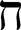
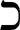
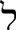
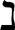
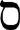
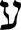
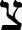
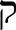

He
HeI have set my heart on your laws.
31I hold fast to your statutes, LORD;
do not let me be put to shame.
32I run in the path of your commands,
for you have broadened my understanding.
He
33Teach me, LORD, the way of your decrees,
that I may follow it to the end.[280]
34Give me understanding, so that I may keep your law
and obey it with all my heart.
35Direct me in the path of your commands,
for there I find delight.
36Turn my heart toward your statutes
and not toward selfish gain.
37Turn my eyes away from worthless things;
preserve my life according to your word.[281]
38Fulfill your promise to your servant,
so that you may be feared.
39Take away the disgrace I dread,
for your laws are good.
40How I long for your precepts!
In your righteousness preserve my life.
Waw
41May your unfailing love come to me, LORD,
your salvation, according to your promise;
42then I can answer anyone who taunts me,
for I trust in your word.
43Never take your word of truth from my mouth,
for I have put my hope in your laws.
44I will always obey your law,
for ever and ever.
45I will walk about in freedom,
for I have sought out your precepts.
46I will speak of your statutes before kings
and will not be put to shame,
47for I delight in your commands
because I love them.
48I reach out for your commands, which I love,
that I may meditate on your decrees.
 Zayin
Zayin
49Remember your word to your servant,
for you have given me hope.
50My comfort in my suffering is this:
Your promise preserves my life.
51The arrogant mock me unmercifully,
but I do not turn from your law.
52I remember, LORD, your ancient laws,
and I find comfort in them.
53Indignation grips me because of the wicked,
who have forsaken your law.
54Your decrees are the theme of my song
wherever I lodge.
55In the night, LORD, I remember your name,
that I may keep your law.
56This has been my practice:
I obey your precepts.
 Heth
57You are my portion, LORD;
I have promised to obey your words.
58I have sought your face with all my heart;
be gracious to me according to your promise.
59I have considered my ways
and have turned my steps to your statutes.
60I will hasten and not delay
to obey your commands.
61Though the wicked bind me with ropes,
I will not forget your law.
62At midnight I rise to give you thanks
for your righteous laws.
63I am a friend to all who fear you,
to all who follow your precepts.
64The earth is filled with your love, LORD;
teach me your decrees.
 Teth
Teth
65Do good to your servant
according to your word, LORD.
66Teach me knowledge and good judgment,
for I trust your commands.
67Before I was afflicted I went astray,
but now I obey your word.
68You are good, and what you do is good;
teach me your decrees.
69Though the arrogant have smeared me with lies,
I keep your precepts with all my heart.
70Their hearts are callous and unfeeling,
but I delight in your law.
71It was good for me to be afflicted
so that I might learn your decrees.
72The law from your mouth is more precious to me
than thousands of pieces of silver and gold.
Yodh
73Your hands made me and formed me;
give me understanding to learn your commands.
74May those who fear you rejoice when they see me,
for I have put my hope in your word.
75I know, LORD, that your laws are righteous,
and that in faithfulness you have afflicted me.
76May your unfailing love be my comfort,
according to your promise to your servant.
77Let your compassion come to me that I may live,
for your law is my delight.
78May the arrogant be put to shame for wronging me without cause;
but I will meditate on your precepts.
79May those who fear you turn to me,
those who understand your statutes.
80May I wholeheartedly follow your decrees,
that I may not be put to shame.
 Kaph
81My soul faints with longing for your salvation,
but I have put my hope in your word.
82My eyes fail, looking for your promise;
I say, “When will you comfort me?”
83Though I am like a wineskin in the smoke,
I do not forget your decrees.
84How long must your servant wait?
When will you punish my persecutors?
85The arrogant dig pits to trap me,
contrary to your law.
86All your commands are trustworthy;
help me, for I am being persecuted without cause.
87They almost wiped me from the earth,
but I have not forsaken your precepts.
88In your unfailing love preserve my life,
that I may obey the statutes of your mouth.
 Lamedh
89Your word, LORD, is eternal;
it stands firm in the heavens.
90Your faithfulness continues through all generations;
you established the earth, and it endures.
91Your laws endure to this day,
for all things serve you.
92If your law had not been my delight,
I would have perished in my affliction.
93I will never forget your precepts,
for by them you have preserved my life.
94Save me, for I am yours;
I have sought out your precepts.
95The wicked are waiting to destroy me,
but I will ponder your statutes.
96To all perfection I see a limit,
but your commands are boundless.
 Mem
Mem
97Oh, how I love your law!
I meditate on it all day long.
98Your commands are always with me
and make me wiser than my enemies.
99I have more insight than all my teachers,
for I meditate on your statutes.
100I have more understanding than the elders,
for I obey your precepts.
101I have kept my feet from every evil path
so that I might obey your word.
102I have not departed from your laws,
for you yourself have taught me.
103How sweet are your words to my taste,
sweeter than honey to my mouth!
104I gain understanding from your precepts;
therefore I hate every wrong path.
 Nun
105Your word is a lamp for my feet,
a light on my path.
106I have taken an oath and confirmed it,
that I will follow your righteous laws.
107I have suffered much;
preserve my life, LORD, according to your word.
108Accept, LORD, the willing praise of my mouth,
and teach me your laws.
109Though I constantly take my life in my hands,
I will not forget your law.
110The wicked have set a snare for me,
but I have not strayed from your precepts.
111Your statutes are my heritage forever;
they are the joy of my heart.
112My heart is set on keeping your decrees
to the very end.[282]
 Samekh
113I hate double-minded people,
but I love your law.
114You are my refuge and my shield;
I have put my hope in your word.
115Away from me, you evildoers,
that I may keep the commands of my God!
116Sustain me, my God, according to your promise, and I will live;
do not let my hopes be dashed.
117Uphold me, and I will be delivered;
I will always have regard for your decrees.
118You reject all who stray from your decrees,
for their delusions come to nothing.
119All the wicked of the earth you discard like dross;
therefore I love your statutes.
120My flesh trembles in fear of you;
I stand in awe of your laws.
 Ayin
121I have done what is righteous and just;
do not leave me to my oppressors.
122Ensure your servant’s well-being;
do not let the arrogant oppress me.
123My eyes fail, looking for your salvation,
looking for your righteous promise.
124Deal with your servant according to your love
and teach me your decrees.
125I am your servant; give me discernment
that I may understand your statutes.
126It is time for you to act, LORD;
your law is being broken.
127Because I love your commands
more than gold, more than pure gold,
128and because I consider all your precepts right,
I hate every wrong path.
 Pe
Pe
129Your statutes are wonderful;
therefore I obey them.
130The unfolding of your words gives light;
it gives understanding to the simple.
131I open my mouth and pant,
longing for your commands.
132Turn to me and have mercy on me,
as you always do to those who love your name.
133Direct my footsteps according to your word;
let no sin rule over me.
134Redeem me from human oppression,
that I may obey your precepts.
135Make your face shine on your servant
and teach me your decrees.
136Streams of tears flow from my eyes,
for your law is not obeyed.
 Tsadhe
137You are righteous, LORD,
and your laws are right.
138The statutes you have laid down are righteous;
they are fully trustworthy.
139My zeal wears me out,
for my enemies ignore your words.
140Your promises have been thoroughly tested,
and your servant loves them.
141Though I am lowly and despised,
I do not forget your precepts.
142Your righteousness is everlasting
and your law is true.
143Trouble and distress have come upon me,
but your commands give me delight.
144Your statutes are always righteous;
give me understanding that I may live.
 Qoph
145I call with all my heart; answer me, LORD,
and I will obey your decrees.
146I call out to you; save me
and I will keep your statutes.
147I rise before dawn and cry for help;
I have put my hope in your word.
148My eyes stay open through the watches of the night,
that I may meditate on your promises.
149Hear my voice in accordance with your love;
preserve my life, LORD, according to your laws.
150Those who devise wicked schemes are near,
but they are far from your law.
151Yet you are near, LORD,
and all your commands are true.
152Long ago I learned from your statutes
that you established them to last forever.
 Resh
Resh
153Look on my suffering and deliver me,
for I have not forgotten your law.
154Defend my cause and redeem me;
preserve my life according to your promise.
155Salvation is far from the wicked,
for they do not seek out your decrees.
156Your compassion, LORD, is great;
preserve my life according to your laws.
157Many are the foes who persecute me,
but I have not turned from your statutes.
158I look on the faithless with loathing,
for they do not obey your word.
159See how I love your precepts;
preserve my life, LORD, in accordance with your love.
160All your words are true;
all your righteous laws are eternal.
 Sin and Shin
Sin and Shin
161Rulers persecute me without cause,
but my heart trembles at your word.
162I rejoice in your promise
like one who finds great spoil.
163I hate and detest falsehood
but I love your law.
164Seven times a day I praise you
for your righteous laws.
165Great peace have those who love your law,
and nothing can make them stumble.
166I wait for your salvation, LORD,
and I follow your commands.
167I obey your statutes,
for I love them greatly.
168I obey your precepts and your statutes,
for all my ways are known to you.
 Taw
Taw
169May my cry come before you, LORD;
give me understanding according to your word.
170May my supplication come before you;
deliver me according to your promise.
171May my lips overflow with praise,
for you teach me your decrees.
172May my tongue sing of your word,
for all your commands are righteous.
173May your hand be ready to help me,
for I have chosen your precepts.
174I long for your salvation, LORD,
and your law gives me delight.
175Let me live that I may praise you,
and may your laws sustain me.
176I have strayed like a lost sheep.
Seek your servant,
for I have not forgotten your commands.
A song of ascents.
1I call on the LORD in my distress,
and he answers me.
2Save me, LORD,
from lying lips
and from deceitful tongues.
3What will he do to you,
and what more besides,
you deceitful tongue?
4He will punish you with a warrior’s sharp arrows,
with burning coals of the broom bush.
5Woe to me that I dwell in Meshek,
that I live among the tents of Kedar!
6Too long have I lived
among those who hate peace.
7I am for peace;
but when I speak, they are for war.
A song of ascents.
1I lift up my eyes to the mountains—
where does my help come from?
2My help comes from the LORD,
the Maker of heaven and earth.
3He will not let your foot slip—
he who watches over you will not slumber;
4indeed, he who watches over Israel
will neither slumber nor sleep.
5The LORD watches over you—
the LORD is your shade at your right hand;
6the sun will not harm you by day,
nor the moon by night.
7The LORD will keep you from all harm—
he will watch over your life;
8the LORD will watch over your coming and going
both now and forevermore.
A song of ascents. Of David.
1I rejoiced with those who said to me,
“Let us go to the house of the LORD.”
2Our feet are standing
in your gates, Jerusalem.
3Jerusalem is built like a city
that is closely compacted together.
4That is where the tribes go up—
the tribes of the LORD—
to praise the name of the LORD
according to the statute given to Israel.
5There stand the thrones for judgment,
the thrones of the house of David.
6Pray for the peace of Jerusalem:
“May those who love you be secure.
7May there be peace within your walls
and security within your citadels.”
8For the sake of my family and friends,
I will say, “Peace be within you.”
9For the sake of the house of the LORD our God,
I will seek your prosperity.
A song of ascents.
1I lift up my eyes to you,
to you who sit enthroned in heaven.
2As the eyes of slaves look to the hand of their master,
as the eyes of a female slave look to the hand of her mistress,
so our eyes look to the LORD our God,
till he shows us his mercy.
3Have mercy on us, LORD, have mercy on us,
for we have endured no end of contempt.
4We have endured no end
of ridicule from the arrogant,
of contempt from the proud.
A song of ascents. Of David.
1If the LORD had not been on our side—
let Israel say—
2if the LORD had not been on our side
when people attacked us,
3they would have swallowed us alive
when their anger flared against us;
4the flood would have engulfed us,
the torrent would have swept over us,
5the raging waters
would have swept us away.
6Praise be to the LORD,
who has not let us be torn by their teeth.
7We have escaped like a bird
from the fowler’s snare;
the snare has been broken,
and we have escaped.
8Our help is in the name of the LORD,
the Maker of heaven and earth.
A song of ascents.
1Those who trust in the LORD are like Mount Zion,
which cannot be shaken but endures forever.
2As the mountains surround Jerusalem,
so the LORD surrounds his people
both now and forevermore.
3The scepter of the wicked will not remain
over the land allotted to the righteous,
for then the righteous might use
their hands to do evil.
4LORD, do good to those who are good,
to those who are upright in heart.
5But those who turn to crooked ways
the LORD will banish with the evildoers.
Peace be on Israel.
A song of ascents.
1When the LORD restored the fortunes of[283] Zion,
we were like those who dreamed.[284]
2Our mouths were filled with laughter,
our tongues with songs of joy.
Then it was said among the nations,
“The LORD has done great things for them.”
3The LORD has done great things for us,
and we are filled with joy.
4Restore our fortunes,[285] LORD,
like streams in the Negev.
5Those who sow with tears
will reap with songs of joy.
6Those who go out weeping,
carrying seed to sow,
will return with songs of joy,
carrying sheaves with them.
A song of ascents. Of Solomon.
1Unless the LORD builds the house,
the builders labor in vain.
Unless the LORD watches over the city,
the guards stand watch in vain.
2In vain you rise early
and stay up late,
toiling for food to eat—
for he grants sleep to[286] those he loves.
3Children are a heritage from the LORD,
offspring a reward from him.
4Like arrows in the hands of a warrior
are children born in one’s youth.
5Blessed is the man
whose quiver is full of them.
They will not be put to shame
when they contend with their opponents in court.
A song of ascents.
1Blessed are all who fear the LORD,
who walk in obedience to him.
2You will eat the fruit of your labor;
blessings and prosperity will be yours.
3Your wife will be like a fruitful vine
within your house;
your children will be like olive shoots
around your table.
4Yes, this will be the blessing
for the man who fears the LORD.
5May the LORD bless you from Zion;
may you see the prosperity of Jerusalem
all the days of your life.
6May you live to see your children’s children—
peace be on Israel.
A song of ascents.
1“They have greatly oppressed me from my youth,”
let Israel say;
2“they have greatly oppressed me from my youth,
but they have not gained the victory over me.
3Plowmen have plowed my back
and made their furrows long.
4But the LORD is righteous;
he has cut me free from the cords of the wicked.”
5May all who hate Zion
be turned back in shame.
6May they be like grass on the roof,
which withers before it can grow;
7a reaper cannot fill his hands with it,
nor one who gathers fill his arms.
8May those who pass by not say to them,
“The blessing of the LORD be on you;
we bless you in the name of the LORD.”
A song of ascents.
1Out of the depths I cry to you, LORD;
2Lord, hear my voice.
Let your ears be attentive
to my cry for mercy.
3If you, LORD, kept a record of sins,
Lord, who could stand?
4But with you there is forgiveness,
so that we can, with reverence, serve you.
5I wait for the LORD, my whole being waits,
and in his word I put my hope.
6I wait for the Lord
more than watchmen wait for the morning,
more than watchmen wait for the morning.
7Israel, put your hope in the LORD,
for with the LORD is unfailing love
and with him is full redemption.
8He himself will redeem Israel
from all their sins.
A song of ascents. Of David.
1My heart is not proud, LORD,
my eyes are not haughty;
I do not concern myself with great matters
or things too wonderful for me.
2But I have calmed and quieted myself,
I am like a weaned child with its mother;
like a weaned child I am content.
3Israel, put your hope in the LORD
both now and forevermore.
A song of ascents.
1LORD, remember David
and all his self-denial.
2He swore an oath to the LORD,
he made a vow to the Mighty One of Jacob:
3“I will not enter my house
or go to my bed,
4I will allow no sleep to my eyes
or slumber to my eyelids,
5till I find a place for the LORD,
a dwelling for the Mighty One of Jacob.”
6We heard it in Ephrathah,
we came upon it in the fields of Jaar:[287]
7“Let us go to his dwelling place,
let us worship at his footstool, saying,
8‘Arise, LORD, and come to your resting place,
you and the ark of your might.
9May your priests be clothed with your righteousness;
may your faithful people sing for joy.’ ”
10For the sake of your servant David,
do not reject your anointed one.
11The LORD swore an oath to David,
a sure oath he will not revoke:
“One of your own descendants
I will place on your throne.
12If your sons keep my covenant
and the statutes I teach them,
then their sons will sit
on your throne for ever and ever.”
13For the LORD has chosen Zion,
he has desired it for his dwelling, saying,
14“This is my resting place for ever and ever;
here I will sit enthroned, for I have desired it.
15I will bless her with abundant provisions;
her poor I will satisfy with food.
16I will clothe her priests with salvation,
and her faithful people will ever sing for joy.
17“Here I will make a horn[288] grow for David
and set up a lamp for my anointed one.
18I will clothe his enemies with shame,
but his head will be adorned with a radiant crown.”
A song of ascents. Of David.
1How good and pleasant it is
when God’s people live together in unity!
2It is like precious oil poured on the head,
running down on the beard,
running down on Aaron’s beard,
down on the collar of his robe.
3It is as if the dew of Hermon
were falling on Mount Zion.
For there the LORD bestows his blessing,
even life forevermore.
A song of ascents.
1Praise the LORD, all you servants of the LORD
who minister by night in the house of the LORD.
2Lift up your hands in the sanctuary
and praise the LORD.
3May the LORD bless you from Zion,
he who is the Maker of heaven and earth.
1Praise the LORD.[289]
Praise the name of the LORD;
praise him, you servants of the LORD,
2you who minister in the house of the LORD,
in the courts of the house of our God.
3Praise the LORD, for the LORD is good;
sing praise to his name, for that is pleasant.
4For the LORD has chosen Jacob to be his own,
Israel to be his treasured possession.
5I know that the LORD is great,
that our Lord is greater than all gods.
6The LORD does whatever pleases him,
in the heavens and on the earth,
in the seas and all their depths.
7He makes clouds rise from the ends of the earth;
he sends lightning with the rain
and brings out the wind from his storehouses.
8He struck down the firstborn of Egypt,
the firstborn of people and animals.
9He sent his signs and wonders into your midst, Egypt,
against Pharaoh and all his servants.
10He struck down many nations
and killed mighty kings—
11Sihon king of the Amorites,
Og king of Bashan,
and all the kings of Canaan—
12and he gave their land as an inheritance,
an inheritance to his people Israel.
13Your name, LORD, endures forever,
your renown, LORD, through all generations.
14For the LORD will vindicate his people
and have compassion on his servants.
15The idols of the nations are silver and gold,
made by human hands.
16They have mouths, but cannot speak,
eyes, but cannot see.
17They have ears, but cannot hear,
nor is there breath in their mouths.
18Those who make them will be like them,
and so will all who trust in them.
19All you Israelites, praise the LORD;
house of Aaron, praise the LORD;
20house of Levi, praise the LORD;
you who fear him, praise the LORD.
21Praise be to the LORD from Zion,
to him who dwells in Jerusalem.
Praise the LORD.
1Give thanks to the LORD, for he is good.
His love endures forever.
2Give thanks to the God of gods.
His love endures forever.
3Give thanks to the Lord of lords:
His love endures forever.
4to him who alone does great wonders,
His love endures forever.
5who by his understanding made the heavens,
His love endures forever.
6who spread out the earth upon the waters,
His love endures forever.
7who made the great lights—
His love endures forever.
8the sun to govern the day,
His love endures forever.
9the moon and stars to govern the night;
His love endures forever.
10to him who struck down the firstborn of Egypt
His love endures forever.
11and brought Israel out from among them
His love endures forever.
12with a mighty hand and outstretched arm;
His love endures forever.
13to him who divided the Red Sea[290] asunder
His love endures forever.
14and brought Israel through the midst of it,
His love endures forever.
15but swept Pharaoh and his army into the Red Sea;
His love endures forever.
16to him who led his people through the wilderness;
His love endures forever.
17to him who struck down great kings,
His love endures forever.
18and killed mighty kings—
His love endures forever.
19Sihon king of the Amorites
His love endures forever.
20and Og king of Bashan—
His love endures forever.
21and gave their land as an inheritance,
His love endures forever.
22an inheritance to his servant Israel.
His love endures forever.
23He remembered us in our low estate
His love endures forever.
24and freed us from our enemies.
His love endures forever.
25He gives food to every creature.
His love endures forever.
26Give thanks to the God of heaven.
His love endures forever.
1By the rivers of Babylon we sat and wept
when we remembered Zion.
2There on the poplars
we hung our harps,
3for there our captors asked us for songs,
our tormentors demanded songs of joy;
they said, “Sing us one of the songs of Zion!”
4How can we sing the songs of the LORD
while in a foreign land?
5If I forget you, Jerusalem,
may my right hand forget its skill.
6May my tongue cling to the roof of my mouth
if I do not remember you,
if I do not consider Jerusalem
my highest joy.
7Remember, LORD, what the Edomites did
on the day Jerusalem fell.
“Tear it down,” they cried,
“tear it down to its foundations!”
8Daughter Babylon, doomed to destruction,
happy is the one who repays you
according to what you have done to us.
9Happy is the one who seizes your infants
and dashes them against the rocks.
Of David.
1I will praise you, LORD, with all my heart;
before the “gods” I will sing your praise.
2I will bow down toward your holy temple
and will praise your name
for your unfailing love and your faithfulness,
for you have so exalted your solemn decree
that it surpasses your fame.
3When I called, you answered me;
you greatly emboldened me.
4May all the kings of the earth praise you, LORD,
when they hear what you have decreed.
5May they sing of the ways of the LORD,
for the glory of the LORD is great.
6Though the LORD is exalted, he looks kindly on the lowly;
though lofty, he sees them from afar.
7Though I walk in the midst of trouble,
you preserve my life.
You stretch out your hand against the anger of my foes;
with your right hand you save me.
8The LORD will vindicate me;
your love, LORD, endures forever—
do not abandon the works of your hands.
For the director of music. Of David. A psalm.
1You have searched me, LORD,
and you know me.
2You know when I sit and when I rise;
you perceive my thoughts from afar.
3You discern my going out and my lying down;
you are familiar with all my ways.
4Before a word is on my tongue
you, LORD, know it completely.
5You hem me in behind and before,
and you lay your hand upon me.
6Such knowledge is too wonderful for me,
too lofty for me to attain.
7Where can I go from your Spirit?
Where can I flee from your presence?
8If I go up to the heavens, you are there;
if I make my bed in the depths, you are there.
9If I rise on the wings of the dawn,
if I settle on the far side of the sea,
10even there your hand will guide me,
your right hand will hold me fast.
11If I say, “Surely the darkness will hide me
and the light become night around me,”
12even the darkness will not be dark to you;
the night will shine like the day,
for darkness is as light to you.
13For you created my inmost being;
you knit me together in my mother’s womb.
14I praise you because I am fearfully and wonderfully made;
your works are wonderful,
I know that full well.
15My frame was not hidden from you
when I was made in the secret place,
when I was woven together in the depths of the earth.
16Your eyes saw my unformed body;
all the days ordained for me were written in your book
before one of them came to be.
17How precious to me are your thoughts,[291] God!
How vast is the sum of them!
18Were I to count them,
they would outnumber the grains of sand—
when I awake, I am still with you.
19If only you, God, would slay the wicked!
Away from me, you who are bloodthirsty!
20They speak of you with evil intent;
your adversaries misuse your name.
21Do I not hate those who hate you, LORD,
and abhor those who are in rebellion against you?
22I have nothing but hatred for them;
I count them my enemies.
23Search me, God, and know my heart;
test me and know my anxious thoughts.
24See if there is any offensive way in me,
and lead me in the way everlasting.
For the director of music. A psalm of David.
1Rescue me, LORD, from evildoers;
protect me from the violent,
2who devise evil plans in their hearts
and stir up war every day.
3They make their tongues as sharp as a serpent’s;
the poison of vipers is on their lips.[293]
4Keep me safe, LORD, from the hands of the wicked;
protect me from the violent,
who devise ways to trip my feet.
5The arrogant have hidden a snare for me;
they have spread out the cords of their net
and have set traps for me along my path.
6I say to the LORD, “You are my God.”
Hear, LORD, my cry for mercy.
7Sovereign LORD, my strong deliverer,
you shield my head in the day of battle.
8Do not grant the wicked their desires, LORD;
do not let their plans succeed.
9Those who surround me proudly rear their heads;
may the mischief of their lips engulf them.
10May burning coals fall on them;
may they be thrown into the fire,
into miry pits, never to rise.
11May slanderers not be established in the land;
may disaster hunt down the violent.
12I know that the LORD secures justice for the poor
and upholds the cause of the needy.
13Surely the righteous will praise your name,
and the upright will live in your presence.
A psalm of David.
1I call to you, LORD, come quickly to me;
hear me when I call to you.
2May my prayer be set before you like incense;
may the lifting up of my hands be like the evening sacrifice.
3Set a guard over my mouth, LORD;
keep watch over the door of my lips.
4Do not let my heart be drawn to what is evil
so that I take part in wicked deeds
along with those who are evildoers;
do not let me eat their delicacies.
5Let a righteous man strike me—that is a kindness;
let him rebuke me—that is oil on my head.
My head will not refuse it,
for my prayer will still be against the deeds of evildoers.
6Their rulers will be thrown down from the cliffs,
and the wicked will learn that my words were well spoken.
7They will say, “As one plows and breaks up the earth,
so our bones have been scattered at the mouth of the grave.”
8But my eyes are fixed on you, Sovereign LORD;
in you I take refuge—do not give me over to death.
9Keep me safe from the traps set by evildoers,
from the snares they have laid for me.
10Let the wicked fall into their own nets,
while I pass by in safety.
A maskil[295] of David. When he was in the cave. A prayer.
1I cry aloud to the LORD;
I lift up my voice to the LORD for mercy.
2I pour out before him my complaint;
before him I tell my trouble.
3When my spirit grows faint within me,
it is you who watch over my way.
In the path where I walk
people have hidden a snare for me.
4Look and see, there is no one at my right hand;
no one is concerned for me.
I have no refuge;
no one cares for my life.
5I cry to you, LORD;
I say, “You are my refuge,
my portion in the land of the living.”
6Listen to my cry,
for I am in desperate need;
rescue me from those who pursue me,
for they are too strong for me.
7Set me free from my prison,
that I may praise your name.
Then the righteous will gather about me
because of your goodness to me.
A psalm of David.
1LORD, hear my prayer,
listen to my cry for mercy;
in your faithfulness and righteousness
come to my relief.
2Do not bring your servant into judgment,
for no one living is righteous before you.
3The enemy pursues me,
he crushes me to the ground;
he makes me dwell in the darkness
like those long dead.
4So my spirit grows faint within me;
my heart within me is dismayed.
5I remember the days of long ago;
I meditate on all your works
and consider what your hands have done.
6I spread out my hands to you;
I thirst for you like a parched land.[296]
7Answer me quickly, LORD;
my spirit fails.
Do not hide your face from me
or I will be like those who go down to the pit.
8Let the morning bring me word of your unfailing love,
for I have put my trust in you.
Show me the way I should go,
for to you I entrust my life.
9Rescue me from my enemies, LORD,
for I hide myself in you.
10Teach me to do your will,
for you are my God;
may your good Spirit
lead me on level ground.
11For your name’s sake, LORD, preserve my life;
in your righteousness, bring me out of trouble.
12In your unfailing love, silence my enemies;
destroy all my foes,
for I am your servant.
Of David.
1Praise be to the LORD my Rock,
who trains my hands for war,
my fingers for battle.
2He is my loving God and my fortress,
my stronghold and my deliverer,
my shield, in whom I take refuge,
who subdues peoples[297] under me.
3LORD, what are human beings that you care for them,
mere mortals that you think of them?
4They are like a breath;
their days are like a fleeting shadow.
5Part your heavens, LORD, and come down;
touch the mountains, so that they smoke.
6Send forth lightning and scatter the enemy;
shoot your arrows and rout them.
7Reach down your hand from on high;
deliver me and rescue me
from the mighty waters,
from the hands of foreigners
8whose mouths are full of lies,
whose right hands are deceitful.
9I will sing a new song to you, my God;
on the ten-stringed lyre I will make music to you,
10to the One who gives victory to kings,
who delivers his servant David.
From the deadly sword 11deliver me;
rescue me from the hands of foreigners
whose mouths are full of lies,
whose right hands are deceitful.
12Then our sons in their youth
will be like well-nurtured plants,
and our daughters will be like pillars
carved to adorn a palace.
13Our barns will be filled
with every kind of provision.
Our sheep will increase by thousands,
by tens of thousands in our fields;
14our oxen will draw heavy loads.[298]
There will be no breaching of walls,
no going into captivity,
no cry of distress in our streets.
15Blessed is the people of whom this is true;
blessed is the people whose God is the LORD.
A psalm of praise. Of David.
1I will exalt you, my God the King;
I will praise your name for ever and ever.
2Every day I will praise you
and extol your name for ever and ever.
3Great is the LORD and most worthy of praise;
his greatness no one can fathom.
4One generation commends your works to another;
they tell of your mighty acts.
5They speak of the glorious splendor of your majesty—
and I will meditate on your wonderful works.[300]
6They tell of the power of your awesome works—
and I will proclaim your great deeds.
7They celebrate your abundant goodness
and joyfully sing of your righteousness.
8The LORD is gracious and compassionate,
slow to anger and rich in love.
9The LORD is good to all;
he has compassion on all he has made.
10All your works praise you, LORD;
your faithful people extol you.
11They tell of the glory of your kingdom
and speak of your might,
12so that all people may know of your mighty acts
and the glorious splendor of your kingdom.
13Your kingdom is an everlasting kingdom,
and your dominion endures through all generations.
The LORD is trustworthy in all he promises
and faithful in all he does.[301]
14The LORD upholds all who fall
and lifts up all who are bowed down.
15The eyes of all look to you,
and you give them their food at the proper time.
16You open your hand
and satisfy the desires of every living thing.
17The LORD is righteous in all his ways
and faithful in all he does.
18The LORD is near to all who call on him,
to all who call on him in truth.
19He fulfills the desires of those who fear him;
he hears their cry and saves them.
20The LORD watches over all who love him,
but all the wicked he will destroy.
21My mouth will speak in praise of the LORD.
Let every creature praise his holy name
for ever and ever.
1Praise the LORD.[302]
Praise the LORD, my soul.
2I will praise the LORD all my life;
I will sing praise to my God as long as I live.
3Do not put your trust in princes,
in human beings, who cannot save.
4When their spirit departs, they return to the ground;
on that very day their plans come to nothing.
5Blessed are those whose help is the God of Jacob,
whose hope is in the LORD their God.
6He is the Maker of heaven and earth,
the sea, and everything in them—
he remains faithful forever.
7He upholds the cause of the oppressed